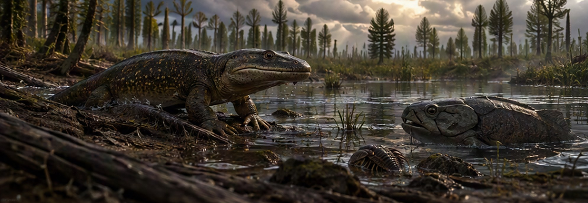

Privécollectie · Natuurhistorie
Miljoenen jaren
Miljoenen jaren
in één kast.
Welkom in mijn verzameling. Van haaientanden die ik zelf vond in Cadzand tot een megalodontand, mosasauriërs en een fragment uit de ruimte.
Uitgelicht


Topstukken
Fossielen
Mosasaurustand in matrix
Een krachtige tand nog in het fosfaatgesteente van Oued Zem, Marokko.
Fossielen
Trilobiet uit het Atlasgebergte
Een gesegmenteerd pantser van een van de oudste geleedpotigen.
Ruimte
Agoudal-meteoriet
Een stukje ijzer-nikkel van een uiteengevallen planetoïde, gevonden in het Hoge Atlasgebergte van Marokko.

Interactief
De grote tandenplaat
Meer dan tweehonderd haaientanden, gesorteerd in vier groepen. Beweeg over de plaat en ontdek welke haaien erachter zitten.

Zelf gevonden
Mijn vondsten uit Cadzand
Tien tanden die ik zelf op het strand vond, elk met soort, zeldzaamheid en leeftijd.

De evolutie van het leven
Van zee naar land
Scroll door 539 miljoen jaar: van de eerste zeedieren tot dinosaurussen, mammoeten en mensen.
Kristal, kleur & kosmos


Mineralen en meer